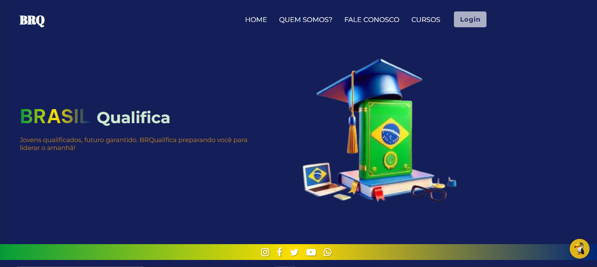

BRQualifica
Protótipo de plataforma digital para combater a desigualdade educacional. Desenvolvido com foco em experiência do usuário e acessibilidade.
Ver ProjetoProtótipo de plataforma digital para combater a desigualdade educacional. Desenvolvido com foco em experiência do usuário e acessibilidade.
Ver ProjetoAplicação web intuitiva que ajuda desenvolvedores a encontrar definições e conceitos importantes do mundo da programação.
Ver ProjetoAplicação para sorteio de amigos secretos com interface amigável e funcionalidades de adicionar e remover participantes.
Ver ProjetoPágina centralizadora de links com design personalizado para redes sociais, contendo todos os meus projetos e formas de contato.